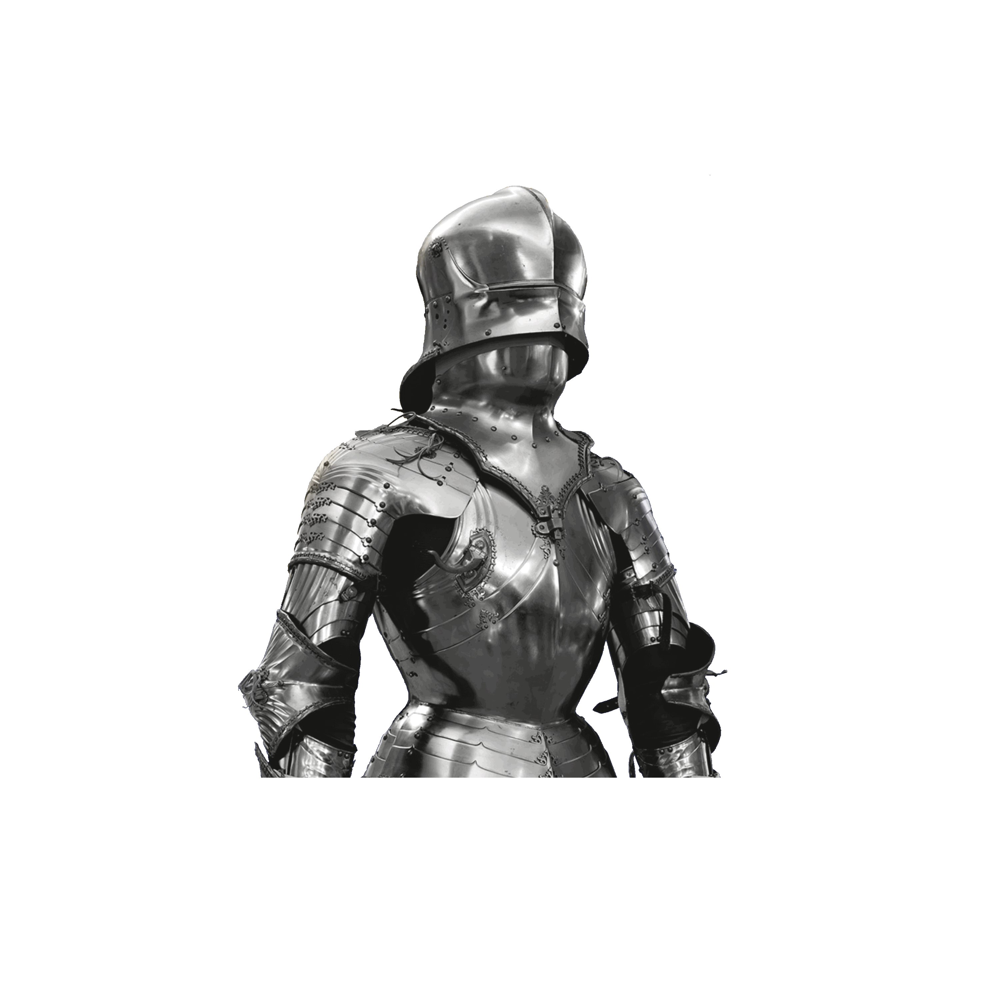

The Last
Night
- The Art, Armor, and Ambition
of Maximilian I -
OCTOBER
7, 2019
–
JANUARY
5, 2020
EXHIBITION
OVERVIEW
The Last Knight: The Art, Armor, and Ambition of Maximilian I examines the profound significance
of European armor at the dawn of the Renaissance, through the lens of Emperor Maximilian I’s (1459–1519)
remarkable life. On view only at The Met, The Last Knight coincides with the five-hundredth anniversary
of Maximilian’s death, and is the most ambitious North American loan exhibition of European arms and armor in decades.
Including 180 objects selected from some thirty public and private collections in Europe, the Middle East,
and the United States, The Last Knight will explore how Maximilian’s unparalleled passion for the trappings and
ideals of knighthood served his boundless worldly ambitions, imaginative stratagems, and resolute efforts to forge
a lasting personal and family legacy.
This exhibition features many works of art on view outside Europe for the first time, including
Maximilian’s own sumptuous armors that highlight his patronage of the greatest European armorers of
his age, as well as related manuscripts, paintings, sculpture, glass, tapestry, and toys, all of which
emphasize the emperor’s dynastic ambitions and the centrality of chivalry at the imperial court and beyond.
"A remarkable array of paintings, drawings, prints, sculpture, tapestry, stained glass and
related art places the armor in a stirring biographical and artistic context. . . . these
manifold riches invite multiple visits."—Wall Street Journal
The exhibition is made possible by Jo Carole and Ronald S. Lauder.
Additional support is provided by Alice Cary Brown and W.L. Lyons Brown,
the Estate of Ralph L. Riehle, the Sherman Fairchild Foundation, the Gail
and Parker Gilbert Fund, Kathleen and Laird Landmann, Marica and Jan Vilcek,
and Christian and Florence Levett.
The exhibition is supported by an Indemnity from the Federal Council on the Arts and the Humanities.
The catalogue is made possible by the Grancsay Fund, The Carl Otto von Kienbusch Memorial Fund, and The Andrew W. Mellon Foundation.